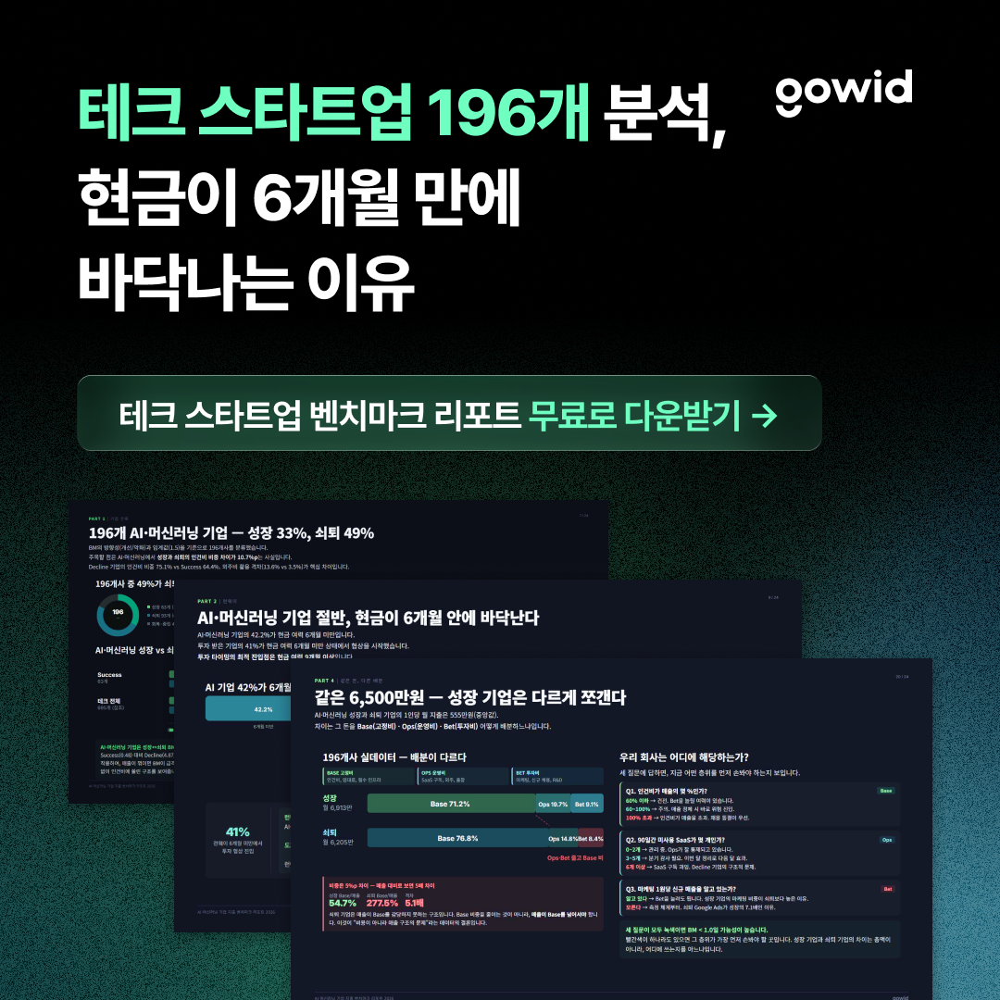
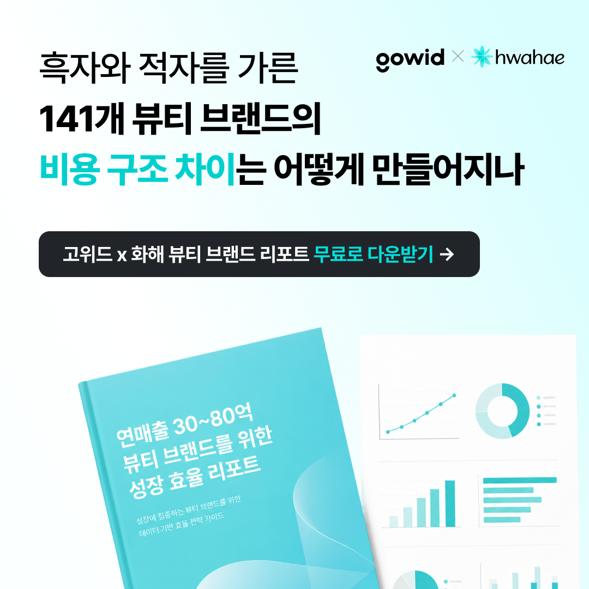
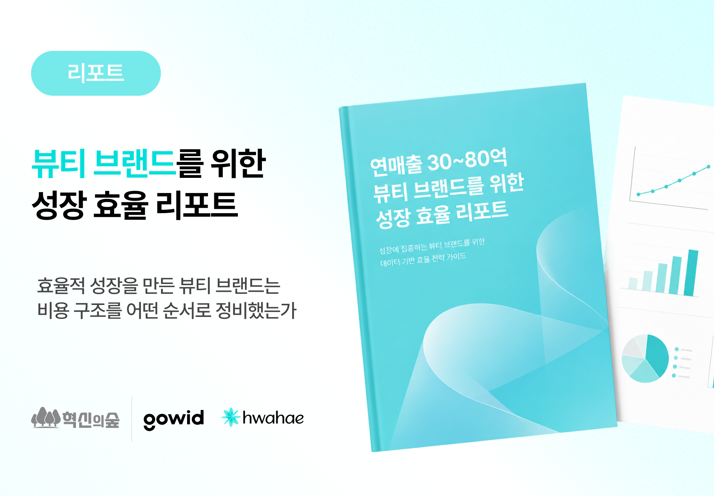

마케터 실전 세션 · Claude Code 활용
마케터를 위한
Claude Code
고객사 더파운더즈(아누아) 사례로 보는 — 분석 · 소재 · 일일 리포트 · 광고주 리포트, 실전 4 워크플로우
최신일
고위드 마케팅
Claude Code
오늘의 5가지 워크플로우
핵심은 하나입니다 — 브랜드를 1페이지로 정리한 brand_brief가 모든 소재·LP·리포트의 단일 출처가 됩니다. 한 번 만들면 이후 결과물의 톤·컬러·메시지가 저절로 정렬됩니다.
1
분석
브랜드 URL 1개 → 1페이지 brand_brief
2
소재 · LP
요청 한 줄 → 카피+비주얼 v1 동시 완성
3
일일 리포트
매일 아침 슬랙 KPI 리포트 자동 발송
4
광고주 리포트
핵심 지표를 한 페이지 대시보드로
5
제안서 · 월간
공시·업종 분석 기반 맞춤 제안 리포트
관통 키워드 brand_brief = Single Source of Truth(단일 출처)
브랜드 URL 1개 → 1페이지 brand_brief
아누아 화해 상세페이지 URL(또는 이미지)을 던지면, Claude Code가 읽고 USP · 컬러 6슬롯 · 톤 · 페르소나를 한 페이지로 정리합니다. 이 문서가 이후 모든 소재·LP·리포트의 단일 출처가 됩니다.
1브랜드 URL · 상세페이지 첨부
→
2페이지 읽고 핵심 추출
→
3brand_brief 1페이지 생성
→
4이후 모든 작업의 출처로 고정
# 요청 한 줄
> 이 화해 상세페이지 읽고 아누아 brand_brief 만들어줘 —
USP · 컬러 6슬롯 · 톤 · 페르소나를 한 페이지로
결과물 아누아 brand_brief.md 열기 →
brand_brief 결과물 — 아누아
USP · 핵심 메시지
3초 광채 플럼핑 — 단 1회, 3초 사용으로 즉각 효과
PDRN + 11중 히알루론산 + 저분자 콜라겐 3종 시너지
세럼 100% 초저분자 스마트 캡슐 — 리포좀 대비 침투력↑
톤 & 보이스
클린 · 워터리 · 임상 근거 기반 · 미니멀
타깃 페르소나
어떤 세럼을 발라도 속당김을 느끼는 30~40대
일시적 수분이 아닌 지속 수분광채를 원하는 사람
여행·외부활동용 휴대 세럼이 필요한 사람
100%
사용 만족도한국피부과학연구원 인체적용시험 · 23명
컬러 6슬롯
결과물 brand_brief.md 전체 보기 →
요청 한 줄 → 소재 · LP v1 동시 완성
brand_brief를 컨텍스트로 두면, 카피와 비주얼이 한 번에 같은 톤으로 나옵니다. 매번 톤을 다시 설명할 필요가 없습니다.
brand_brief 없이
매번 톤·컬러 재설명
카피 따로, 디자인 따로 — 결과물마다 결이 달라짐
brand_brief 기반
한 줄 요청 → v1 완성
아누아 톤·컬러·USP가 반영된 카피+비주얼이 한 번에
# 요청 한 줄
> brand_brief 기준으로 '3초 광채 플럼핑' 후킹 LP 1장 만들어줘 —
히어로 카피 · 성분 3종 · 임상 수치 · CTA 포함
결과물 랜딩페이지 → · 광고 소재 5종 갤러리 →
매일 아침 슬랙 KPI 리포트
Meta Marketing · GA4를 연동하면, 매일 오전 핵심 지표·고성과 Top3·저성과 가드레일이 슬랙으로 자동 발송됩니다.
A
아누아 데일리오전 9:00#marketing-daily
📊 2026-06-08 아누아 PDRN 세럼 데일리 리포트
👀 노출 / 클릭
156,400 / 2,340 CTR 1.50%
🏆 고성과 소재 Top 3
AD-02 3초 광채 Before-AfterROAS 4.51x
AD-07 PDRN 성분 클로즈업ROAS 3.88x
AD-04 휴대용 UGC 후기ROAS 3.24x
⚠️ 저성과 가드레일
AD-05 11중 히알루론산 설명형CPA ₩47,600
AD-09 임상 그래프 단독정지 권장
한 줄 요청 명령 /daily-slack — 스킬로 굳혀 두면 매일 같은 형식으로 자동화 · * 수치는 데모 · 일일 리포트 →
광고주 모니터링 대시보드 — 한 페이지
Meta · GA4 핵심 지표를 한 페이지로 — 우리 브랜드 전용 대시보드 구성 가이드.
DAILY KPI
지출 · ROAS · CPA 일자별 추이
CREATIVE
소재별 성과 ROAS·CTR·CPA 순위
AUDIENCE
연령·성별·관심사 세그먼트 성과
| 섹션 | 핵심 지표 | 읽는 법 |
|---|
| Daily KPI | 지출 · ROAS · CPA | 예산 소진 속도 대비 효율 점검 |
| Creative | 소재별 ROAS · CTR | 증액·교체·정지 의사결정 |
| Funnel | 전환율 · 단계 이탈 | 병목 구간(랜딩·결제) 진단 |
| Audience | 세그먼트별 CPA | 타깃 집중·확장 방향 설정 |
* 구성·지표는 예시(데모)이며, brand_brief 톤·컬러를 그대로 입혀 광고주용으로 출력합니다. · 광고주 대시보드 →
제안서·월간 리포트 — 데이터로 설득하는 한 장
소재·광고를 넘어, 클라이언트의 다음 단계를 함께 설계하는 제안 리포트까지. 플로우보다 원칙이 중요합니다.
①
공시자료 조사
법인 공개정보·업종 벤치마크를 조사해 근거 있는 숫자로 말합니다.
②
연관 업종 사례
같은 성장 구간·업종의 사례를 기반으로 맞춤 리포트를 만듭니다.
③
brand_brief 컬러
리포트의 색·톤은 brand_brief에서 상속 — 단일 출처로 일관되게.
예시 결과물 루스프로덕트 — Gowid Waypoint Report (공개정보+업종분석 기반) · 월간 반복은 /monthly-report 스킬로 자동화
5개는 결국 하나로 이어집니다
brand_brief 1장이 단일 출처이기 때문에, 소재도 리포트도 제안서도 같은 톤·컬러·메시지로 정렬됩니다. 앞 단계의 결과가 다음 단계의 입력이 되는 하나의 파이프라인입니다.
1 · 분석brand_brief (단일 출처)
→
2 · 소재 · LP일관된 카피+비주얼
→
3 · 일일 리포트슬랙 KPI 자동 발송
→
4 · 광고주 리포트한 페이지 대시보드
→
5 · 제안서·월간공시·업종 기반 제안
효과 톤을 매번 다시 설명하지 않습니다 — 한 번 정리하면 모든 산출물이 같은 결로 나옵니다.
고위드 마케터의 활용법
오늘 사례 외에도, 고위드 마케팅은 Claude Code로 이런 일들을 합니다.
마케터가 하는 일
검색광고 / SEO 분석
BP 성공사례 콘텐츠 제작
아웃바운드 이메일 작성
뉴스레터 자동 운영
메타 / 링크드인 광고 소재 기획 · 제작 · 리포팅
벤치마크 리포트(리드 마그넷 콘텐츠) 제작
소재 · 리포트 제작 예시

소재 테크 196개 벤치마크

소재 뷰티 141개 벤치마크

리포트 뷰티 브랜드 성장 효율 리포트 · PDF 열기 →
오늘 당장 해볼 것
오늘 당장
내가 담당하는 브랜드 URL로 brand_brief 1장 만들기
그 brand_brief 기준으로 소재·LP v1 1건 뽑아보기
슬랙 데일리 리포트 포맷을 스킬(/daily-slack)로 굳히기
다음 단계
Meta · GA4 MCP 연동해 실데이터로 리포트 자동화
광고주별 대시보드를 brand_brief 톤으로 템플릿화
잘 된 워크플로우를 팀에 스킬로 공유
핵심 도구를 배우는 게 아니라, 반복 업무를 한 번 굳혀 자동화하는 것입니다.
오늘 만든 것 — 산출물 모아보기
아래 산출물은 모두 brand_brief 단일 출처에서 이어진 결과물입니다. (클릭하면 열립니다)
요청 한 줄이
곧 결과물이 됩니다.
브랜드를 1페이지로 정리하는 순간, 소재·LP·일일 리포트·광고주 리포트가 같은 결로 따라옵니다. 마케터의 시간은 판단과 전략에 쓰면 됩니다.
분석 → 소재 → 일일 리포트 → 광고주 리포트, 하나의 파이프라인
brand_brief라는 단일 출처가 일관성과 속도를 동시에 만듭니다
고위드 마케팅의 반복 업무부터 하나씩 스킬로 굳혀갑시다
고위드 마케팅 최신일 · 함께 만들어가는 Claude Code 워크플로우